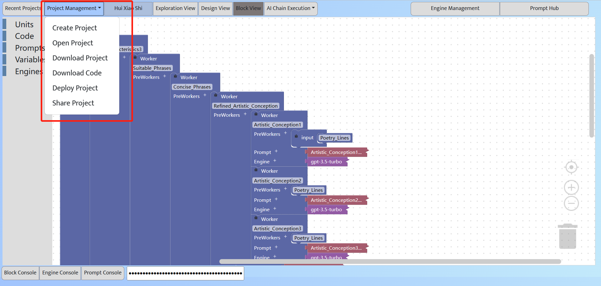

Project Management
Create, open, save, share, or deploy your AI chain projects
Project Management Menu
Project management features can be accessed in Artifacts.
Users can create a new AI chain project (Create Project), doweload the current project to local disk (Download Project), or open a project on local disk in the IDE (Open Project).
Users can download the backend Python code implementing the AI chain (Download Code) to local disk and reuse the code in their other software projects. Note that our sapperchain Python library (which is not open sourced) is required to execute the downloaded AI chain code.
If the users want to open source their AI chain projects, they can Share Project to our AI chain marketplace. Our IDE implements a creative co-pilot to generate a short description and an image for the AI chain project based on its task requirement and worker prompts.
Our IDE can now deploy the AI chain as a local web service (Deploy Project), which can then be manually deployed to the external cloud servers. (Upcoming feature) We are implementing the feature for automatic cloud service deployment.